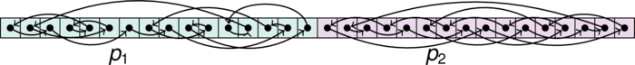

pmbw - Parallel Memory Bandwidth Benchmark / Measurement
Posted on 2013-07-08, last updated 2013-12-12 by Timo Bingmann at Permlink.
Summary
The tool pmbw is a set of assembler routines to measure the parallel memory (cache and RAM) bandwidth of modern multi-core machines. Memory bandwidth is one of the key performance factors of any computer system. And today, measuring the memory performance often gives a more realistic view on the overall speed of a machine than pure arithmetic or floating-point benchmarks. This is due to the speed of computation units in modern CPUs growing faster than the memory bandwidth, which however is required to get more information to the CPU. The bigger the processed data amount gets, the more important memory bandwidth becomes!
The pmbw tool contains a set of very basic functions, which are all hand-coded in assembler to avoid any compiler optimizations. These basic functions are modeled after the basic inner loops found in any data processing: sequential scanning and pure random access. Any application will have a memory access pattern that is somewhere between these two extremes.
Besides these two access patterns, the basic functions benchmark different modes of memory access. Depending on the architecture, 16- / 32- / 64- / 128- or 256-bit memory transfers are tested by using different machine instructions, like MMX, SSE or AVX. Furthermore, iterating by pointers is compared against access via array index. The current version of pmbw supports benchmarking x86_32-bit, x86_64-bit and ARMv6 systems.
Most important feature of this benchmark is that it will perform the tests in parallel with growing number of threads. The results of these scalability tests highlight the basic problem which parallel multi-core algorithms must cope with: scanning memory bandwidth does not scale with the number of cores in current systems. The ratio of bandwidth to cache over the bandwidth to RAM determines the amount of local cache-based processing which must be done between RAM accesses for an algorithm to scale well.
This web page also contain a set of pmbw results from various multi-core machines.
See below for a description of the benchmark routines. The assembler code for x86_32, x86_64 and ARM can also be viewed online.
The basic idea of measuring memory bandwidth is not new, however, none of the existing benchmarks target multi-core parallelism, growing array sizes and simple program loops. The STREAM benchmark allows tuning for specific hardware and is not in assembler code. Zack Smith's bandwidth benchmark is limited to sequential bandwidth and was the starting point for designing pmbw.
Downloads
| pmbw 0.6.2 (current) released 2013-12-12 | ||
| Source Code Archive: | pmbw-0.6.2.tar.bz2 | Browse online CommitLog |
| Binary Executables: (statically linked) | pmbw-0.6.2-linux_x86-64.tar.bz2 pmbw-0.6.2-win64.zip pmbw-0.6.2-linux_armv6.tar.bz2 | |
The source code is published under the GNU General Public License v3 (GPL), which can also be found in the file COPYING.
A git repository containing all sources and revisions is fetchable by running
git clone https://github.com/bingmann/pmbw.git
Description of the Benchmark Functions
When started, pmbw detects how much physical RAM is available and allocates an array, which spans almost all RAM. The allocated array size is the highest power of two, which still fits into RAM. Note that for machines with lots of RAM, this phase can take several minutes.
Thereafter, one of the assembler benchmark routines is selected and run with
- increasing array size n and
- increasing thread count p, dividing the array evenly among threads.
The array size is usually doubled after each iteration, with some additional test points inserted between powers of two. The array size starts at 1024 and ends at the total allocated RAM size. For large thread counts, the array size is rounded up so that at least one cache line is allocated to each thread.
Each benchmark routine contains a repeat loop, because very short tests cannot be measured due to limited timer resolution. Therefore, the pmbw tool repeats the inner loop many, many times, so that a whole test instance requires at least one second. The actual number of repeats of a test instance is estimated by pmbw depending on the bandwidth result of the previous test. Thus, each test routine runs at least approximately 1.5 seconds. However, larger benchmark instances can take considerably longer even for one repetition.
The names of the benchmark routines is composed of several abbreviated components, which together specify the exact operations:
- Scan indicates scanning operations, while Perm are permutation walking tests (see below).
- Write/Read specifies the operation done.
- 16/32/64/128/256 indicates the number of bits transfered by a single instruction in the benchmark routine. Which exactly are available depends on the architecture.
- Ptr represents pointer-based iteration, while Index is index-based array access.
- SimpleLoop routines contain only one operation per loop, after which the end condition is checked. UnrollLoop benchmarks contain 16 operations per loop, followed by the end check.
Thus, for example, ScanWrite64PtrUnrollLoop is a benchmark routing with scanning pointer-based access pattern, performing 16 operations per loop, and writing 64-bit per instruction. This benchmark routine comes closest to what memset() would do on a 64-bit machine.
Scanning Operation
A side-goal of pmbw was to check which kind of access loop is faster: running iterators/pointers like *ptr++ or array indexes like array[i++]. Just about any C/C++ program uses both of these access loops, and most STL documentations say that pointer access is faster. I decided to put this folk wisdom to the test. Obviously, pointer access requires one register less than index-based access, but is it really faster?
Another goal was to check whether loop unrolling really has a positive effect. Generally, this was the case for all routines, thus for pure memory bandwidth results, one should concentrate on the UnrollLoop benchmarks.
The benchmark routines are coded in gcc inline assembly, however, for easier exposition, the same routines are shown in C/C++ syntax below. We first set size_t an = n / sizeof(uint64_t); to correctly count the number of 64-bit integers in the array.
A selection of the 64-bit scanning benchmarks in C/C++ representation are shown below. The first batch use pointer-based iteration, as would be used with STL iterators:
// ScanRead64PtrSimpleLoop for (uint64_t* p = array; p < array + an; ++p) uint64_t x = *p; // ScanWrite64PtrSimpleLoop uint64_t x = 0xC0FFEE00C0FFEE00; for (uint64_t* p = array; p < array + an; ++p) *p = x; | // ScanRead64PtrUnrollLoop for (uint64_t* p = array; p < array + an; ++p) { uint64_t x0 = *(p+0); uint64_t x1 = *(p+1); // ... 13 times uint64_t x15 = *(p+15); } // ScanWrite64PtrUnrollLoop omitted |
The following second batch of benchmark routines use array index-based access operations:
// ScanRead64IndexSimpleLoop for (size_t i = 0; i < an; ++i) uint64_t x = array[i]; // ScanWrite64IndexSimpleLoop uint64_t x = 0xC0FFEE00C0FFEE00; for (size_t i = 0; i < an; ++i) array[i] = x; | // ScanRead64IndexUnrollLoop for (size_t i = 0; i < an; i += 16) { uint64_t x0 = array[i+0]; uint64_t x1 = array[i+1]; // ... 13 times uint64_t x15 = array[i+15]; } // ScanWrite64IndexUnrollLoop omitted |
Note that gcc's optimization will detect that the Read variants of these C/C++ loops don't accomplish anything and completely remove the loop. Likewise it will optimize writing depending on the -march= switch. However, for pmbw all these optimizations are irrelevant, as the benchmark routines are coded in assembler. Loops with 16-/32-/128-/256-bit data types look similar, but use special CPU instructions.
When using multiple threads, the scanned array is divided evenly among threads. The following figure illustrates the access pattern:
To avoid side effects due to adjoint array regions, for smaller test instance sizes the thread's individual areas are spaced out! This is necessary, as otherwise cache line thrashing effects show in the Write tests. The spacing between thread areas is irregular, which helps to avoid cache associativity problems.
Modern CPUs will heavily optimize the scanning access pattern using prefetching (look-ahead reading) and write combining of cache lines. Benchmarking of these effects is intentional, but most programs do not use pure scanning operations.
Random Permutation Walking
The second set of benchmark tests walk a random pointer permutation: each array cell accessed in the array yields the position of the next access. For this pattern all look-ahead optimizations of modern CPUs are useless and the measured time is the raw bandwidth and latency of a single memory fetch cycle, without tricks. Though this benchmark may seem artificial, it is really much closer to a real-world data processing application than plain scanning. Nevertheless, it is probably the access pattern where all optimizations must fail.
Before the test benchmark routine is called, the array area of each thread is filled with a random cyclic permutation of pointers. Thus for two threads, the allocated array will have the following layout:

Then the benchmark routine walks the permutation, it finishes when the cycle is complete. The C/C++ representations of this benchmark's two routines is shown below:
// PermRead64SimpleLoop uint64_t p = *array; while( (uint64_t*)p != array ) p = *(uint64_t*)p; | // PermRead64UnrollLoop uint64_t p = *array; while( (uint64_t*)p != array ) { p = *(uint64_t*)p; // ... 14 more times p = *(uint64_t*)p; } |
There currently is no Write version of this benchmark. Obviously, no Index variant makes sense.
Compiling and Running pmbw
The benchmark tool is simple to compile, because it only requires pthreads and the rt libraries. The standard ./configure && make sequence will build pmbw and stats2gnuplot binaries.
Running pmbw will immediately start the benchmark. All statistical output of pmbw is written to the file stats.txt in the current directory. To correctly run the benchmark, all but the most important system daemons must be stopped. It is also recommended to run with higher nice priority:
# nice -n -2 ./pmbw -s 0 CPUID: mmx sse Detected 5967 MiB physical RAM and 8 CPUs. Allocating 4096 MiB for testing. Running nthreads=1 factor=1073741824 areasize=1024 thrsize=1152 testsize=1152 repeats=932068 testvol=1073742336 testaccess=134217792 run time = 0.108137 -> rerunning test with repeat factor=14894262055 Running nthreads=1 factor=14894262055 areasize=1024 thrsize=1152 testsize=1152 repeats=12929047 testvol=14894262144 testaccess=1861782768 run time = 1.25262 -> next test with repeat factor=17835729058 [...] #
The benchmark continuously outputs RESULT lines to stats.txt, which contain key=value pairs specifying all information about a single benchmark routine run.
The pmbw -s 0 call above contains -s 0, which instructs pmbw to test all array sizes. Without this option, only sizes up to 4 GiB are benchmarked. This is safety flag, because pmbw runs very long on systems with lots of RAM.
To visualize the statistical output, the stats2gnuplot program can create a PDF via gnuplot. The output PDF is called plots-host.pdf and can be generated by calling:
# ./stats2gnuplot stats.txt | gnuplot
Running pmbw -h yields some additional command line options:
Usage: ./pmbw [options] Options: -f <match> Run only benchmarks containing this substring, can be used multile times. Try "list". -M <size> Limit the maximum amount of memory allocated at startup. -p <nthrs> Run benchmarks with at least this thread count. -P <nthrs> Run benchmarks with at most this thread count (overrides detected processor count). -Q Run benchmarks with quadratically increasing thread count. -s <size> Limit the maximum test array size. Set to 0 for no limit.
Older Downloads
| pmbw 0.6 released 2013-07-08 | ||
| Source code archive: | pmbw-0.6.tar.bz2 | Browse online |